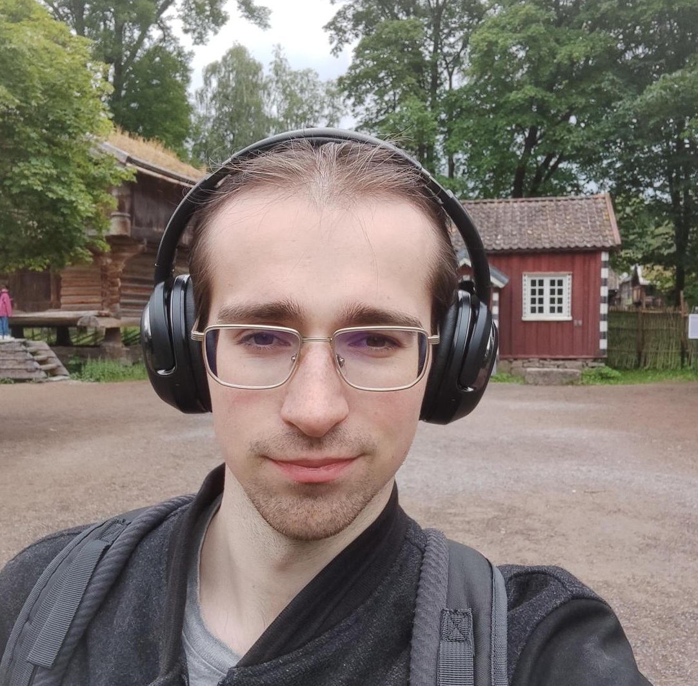
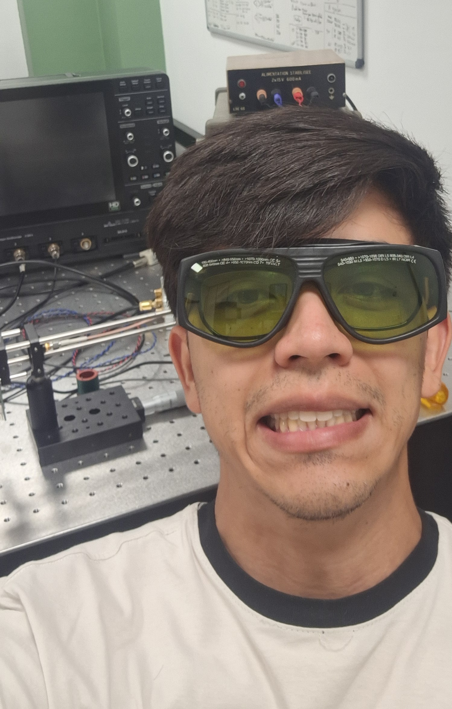
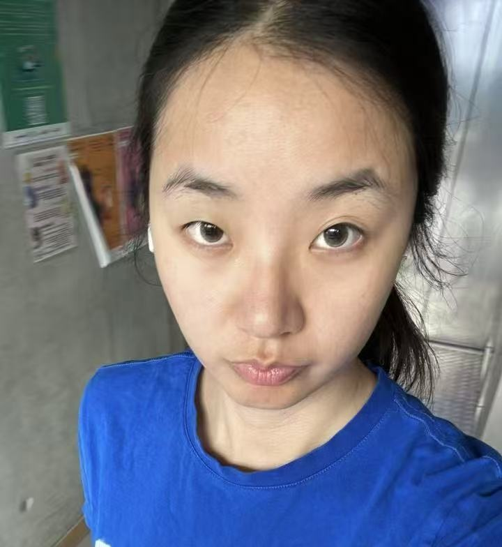
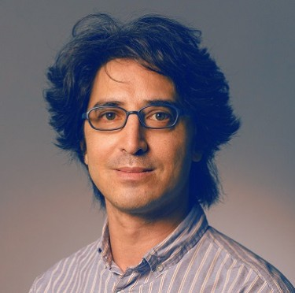
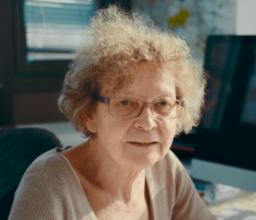

02 · The Group
Our Team

Caitlin Tye
Postdoctoral Researcher
Experimental optics for the RIPPLE Pre-maturation project.

Raphël Livet
PhD Student
Optics and Deep-Learning for lensless microscopy.

Zavush Ataei
Master's Student
Deep-Learning for computational microscopy.

Juan Diego Zuniga Vargas
Master's Student
Optics for lensless microscopy. Passionate about birds and Japanese culture. Fan of Pokémon (and capybaras), and currently reading 1984.

Zige Huang
Master's Student
Deep learning for FPM. Favourite language: Python. Favourite sound: electronic music, and the GPU finally starting training
Collaborators

Yaneck Gottesman
Head of the Physics Department

Bernadette Dorizzi
Emeritus Professor
Alumni
Songhui "Eason" Wang
PhD Track · 2024–2026
Vasili Riabchenko
Master's Student · 2025